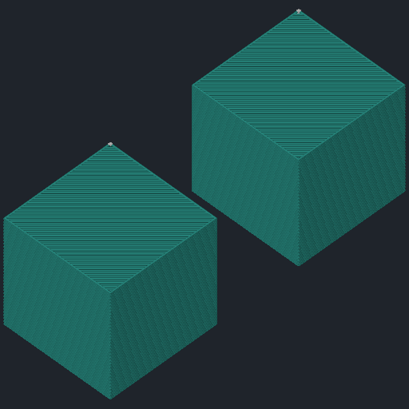

Модели и столы
Загрузить файл, расположить детали, создать стол или разделить модель на части.
Открытый форк OrcaSlicer для ИИ-агентов
Расскажите, что хотите напечатать.
Агент подготовит модель, применит настройки и проверит нарезку.
Локальный MCP · Ваш любимый агент · Проверено на macOS Apple Silicon
Пример запроса. Без отправки на принтер.

Траектории печатиСтол 01Меньше кликов. Больше дела.
Инструменты для работы с проектом —
от загрузки модели до подготовки задания.
Загрузить файл, расположить детали, создать стол или разделить модель на части.
Поддержки, мосты, разглаживание и наборы настроек, которые можно хранить и передавать.
Выбрать устройство, синхронизировать поддерживаемое сопло и сопоставить филаменты с AMS.
Проверить траектории, оценить время и расход материала, подготовить задание для принтера.
Доступные операции зависят от сборки и принтера. Агент читает возможности текущего окна, а не угадывает их.
Три части. Один рабочий процесс.
Отдельная сборка форка открывает доступ к проекту. Вы явно включаете управление и выбираете папки для файлов.
Действия в слайсереСвязывает ваш ИИ-клиент со слайсером: передаёт команды и возвращает состояние, результаты и изображения.
28 инструментовОбъясняет порядок работы: какое окно выбрать, что проверить и когда запросить разрешение на отправку.
Проверки и порядокПочему именно форк? Обычная OrcaSlicer не содержит нужного API для управления открытым проектом. CLI не заменяет работу с текущими моделями, столами и устройствами в окне приложения.
Посмотреть исходникиНачните с одного сообщения
Скопируйте промпт в любимый агент с поддержкой MCP.
Он проверит окружение и проведёт вас через установку.
Один MCP для любого совместимого агента. Агент проверит ваш клиент, установит сервер и навык и поможет подключиться к слайсеру.
Промпт не разрешает отправку печати и управление заданиями на принтере.
Помоги установить OrcaSlicer Agent из https://github.com/outsid3rx/OrcaSlicer-Agent-control и подключить его к моему ИИ-агенту через MCP. Изучи README и docs/agent/INSTALL.md выбранной версии. Проверь ОС, архитектуру и доступные релизы. MCP универсальный: используй мой текущий клиент с поддержкой stdio; если клиент не определён, уточни его. Используй совместимую сборку именно этого форка с AgentControl и проверь manifest и контрольные суммы. Если нужных файлов или совместимого релиза нет, объясни это и остановись — обычная OrcaSlicer не заменяет этот форк. Перед заменой приложения помоги сохранить проекты и пользовательский сертификат, если он добавлен внутрь .app. Не удаляй профили, базу рецептов и журналы операций. Установи MCP и навык штатным scripts/agent/install.sh. Для клиентов со штатной поддержкой установщика используй нужные --client; для остальных получи универсальную конфигурацию stdio и подключи встроенный навык по документации клиента. Если навыки не поддерживаются, используй его инструкции как руководство для агента. Если нужен uv, объясни способ его установки. Выполни doctor и помоги переподключить MCP. Уточни разрешённые папки моделей и экспорта. Запусти Orca с ORCA_AGENT_CONTROL=1 и этими папками. Через MCP проверь orca_list_instances, явный выбор окна и доступные возможности. Успех doctor сам по себе не доказывает подключение к окну Orca. Не включай ORCA_AGENT_PRINTING=1 и ничего не отправляй на принтер в ходе установки. В конце покажи версии, расположение MCP и результаты проверок.
Проект развивается. Перед установкой проверьте состав доступного релиза. Проверить релизы ↗
Ниже — инструкция для macOS Apple Silicon. Понадобятся сборка форка, архив установщика MCP и uv. Поддержка других платформ этим не подтверждается.
Откройте
релизы форка. Найдите DMG и установочный архив из одного комплекта,
проверьте release-manifest.json и
SHA256SUMS. Если их нет, дождитесь релиза;
обычная OrcaSlicer не подойдёт.
Сохраните проекты и закройте приложение. Перенесите сборку из DMG в Applications. Личный CA Bambuddy в публичный DMG не входит: сохраните его отдельно перед заменой приложения.
Распакуйте установочный архив и откройте терминал в его папке. Установите MCP и добавьте выданную конфигурацию в свой клиент. Установщик сохраняет остальные настройки клиентов и создаёт резервные копии.
./scripts/agent/install.sh install ./scripts/agent/install.sh doctor
Без --client установщик ставит сервер и
выдаёт конфигурацию stdio для вашего клиента. Навык из
skills/orca-mcp-control/ подключите по
документации клиента; если навыки не поддерживаются,
используйте его инструкции как руководство для агента. Для
автоматической настройки Codex или ZCode добавьте
--client codex или
--client zcode к командам выше.
Создайте папки для моделей и экспорта. Замените примеры ниже на их существующие абсолютные пути и запустите бинарник напрямую. Обычный запуск через иконку API не включает.
ORCA_AGENT_CONTROL=1 \ ORCA_AGENT_INPUT_ROOTS='["/Users/you/3D/models"]' \ ORCA_AGENT_OUTPUT_ROOTS='["/Users/you/3D/exports"]' \ /Applications/OrcaSlicer.app/Contents/MacOS/OrcaSlicer
Если Orca уже открыта без API, сначала сохраните проект и закройте её. Смена окружения не меняет запущенный процесс.
Попросите агента вызвать orca_list_instances,
выбрать нужную пару session_id / window_id и
прочитать возможности окна. Несколько окон поддерживаются.
Тестовая печать для проверки подключения не нужна.
Нет. Это открытый неофициальный форк OrcaSlicer, который добавляет нативный AgentControl API. Он нужен, чтобы внешний агент работал с текущим проектом, настройками и устройствами. Отдельный MCP связывает API с вашим ИИ-клиентом.
С любым клиентом, который поддерживает MCP через stdio:
например, Codex, Claude Desktop, Cursor, Windsurf или ZCode.
Установщик автоматически настраивает Codex и ZCode, а без
--client выдаёт универсальную конфигурацию для
остальных. Доступность MCP зависит от версии и настроек
клиента; конкретную ИИ-модель вы выбираете сами.
Нет. При обычном запуске API выключен.
ORCA_AGENT_CONTROL=1 разрешает работу со
слайсером, а выбранные папки ограничивают импорт и экспорт
файлов. Для отправки заданий и управления устройством отдельно
нужен ORCA_AGENT_PRINTING=1 в окружении Orca.
Установочный промпт его не включает.
Навык требует разрешения перед отправкой, кроме задания,
которое вы уже явно одобрили, или принтера с
virtual в имени. Отчёт включает время, расход
материала, скриншот нарезки и изменения настроек. При обычном
подтверждении он показывается до отправки, при исключении —
после неё.
Имя virtual обычно используют для прокси и
очередей, например Bambuddy. Оно не гарантирует, что
физическая печать не начнётся. Неопределённый результат
отправки нельзя автоматически повторять.
MCP и библиотека рецептов работают локально, отдельный backend проекта не нужен. При этом выбранный вами ИИ-клиент может отправлять контекст модели в облако согласно своим настройкам. «Локальный MCP» не означает, что сам ИИ обязательно локальный.
Это наборы параметров для конкретной области проекта: например, настройки поддержек или разглаживания. Они хранятся в локальной SQLite-базе отдельно от приложения. Есть редакции, проверка совместимости, объединение рецептов и обмен JSON-дампами. Агент показывает изменения перед применением; несовместимые параметры не заменяются молча.
Дамп предназначен для обмена рецептами и не заменяет резервную копию базы с операционными квитанциями.
Комплект локально проверен на macOS Apple Silicon. Текущий установщик работает на macOS; Windows и Linux пока не считаются проверенными. Возможности печати зависят от устройства и backend: наличие поддержки в обычном Orca не гарантирует доступность любой операции через агента.
Обновляйте приложение сборкой этого форка. Официальная сборка уберёт AgentControl. В новых сборках форка автоматическая проверка обновления приложения через upstream выключена; ручная команда открывает релизы форка.
MCP обновляется отдельно с сохранением рецептов и журналов.
Публичный DMG не содержит личного CA Bambuddy. Если сертификат
добавлен внутрь .app, при замене приложения это
изменение теряется — сохраните оригинал заранее.
Автоматический перенос сертификата пока не реализован.
Ваш следующий проект — чуть проще